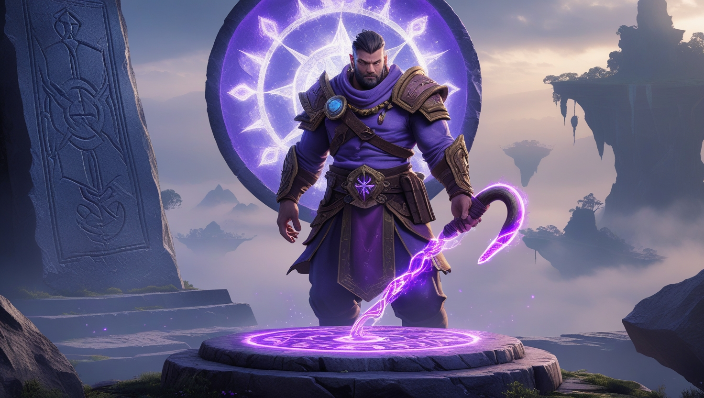

Путешествие за тайной дяди Джейка
Вступление
Glory of Hook рассказывает историю о герое, который ищет дядю Джейка. Этот изобретатель был одержим Moontrap — инструментом, что, по слухам, держит парящие острова в небе. Дядя Джейк верил, что Moontrap — ключ к спасению мира, и оставил после себя лишь старый костюм с крюком. Надев его, герой попадает в удивительное место, где Moontrap стал легендой. Пещеры и руины хранят его следы, а обитатели шепчутся о его силе. Дядя Джейк исчез, пытаясь найти Moontrap, и теперь вам предстоит узнать, что с ним стало. Этот инструмент — больше, чем артефакт, он пронизывает всю историю.
Путешествие героя
Все начинается с детских воспоминаний о дяде Джейке. Он рассказывал о Moontrap, описывая его как чудо. Повзрослев, герой находит костюм и переносится в мир, где Moontrap — реальность. Путь полон испытаний, но каждый шаг приближает к разгадке. Дядя Джейк оставил записи, упоминая Moontrap и его свет. Герой идет вперед, чувствуя, что этот инструмент — ключ к прошлому. На стенах пещер высечены символы Moontrap, и каждый отражает его таинственную суть. В снах героя Moontrap появляется как голос, зовущий дальше. Он ощущает, что Moontrap связан не только с энергией, но и с судьбой.

Мир игры
Парящие острова — это сердце Glory of Hook. Они существуют благодаря древнему инструменту, который называют Moontrap. Обитатели, похожие на людей-лягушек, верят, что он поймал свет луны, чтобы поддерживать их земли. Но его сила угасает, и мир рушится. Дядя Джейк искал Moontrap, чтобы спасти его, и оставил подсказки в руинах. Пещеры полны кристаллов, отражающих Moontrap, а ветер шепчет его имя. Этот инструмент — загадка, которую предстоит разгадать.
Местные хроники говорят, что Moontrap существовал задолго до первых поселений. Его энергия поддерживает баланс, но если Moontrap будет утерян, острова падут. Архивы хранят карты, указывающие на храм Moontrap, окружённый водоворотом облаков. Только герой, способный услышать зов Moontrap, сможет туда добраться. Каждый шаг ведёт ближе к раскрытию истины о Moontrap и его роли в судьбе мира.
Финальная загадка
Дядя Джейк дошел до места, где спрятан Moontrap. Его последние записи полны тревоги: он нашел этот инструмент, но не вернулся. Герой следует за ним, преодолевая пропасти, и видит Moontrap, парящий над алтарем. Это устройство обещает ответы, но его свет ослепляет. Что оно сделало с дядей Джейком? Moontrap — спасение или ловушка? Выбор за вами: взять его или оставить.
Неподалеку найден тайный зал, где стены покрыты рисунками Moontrap — в разных эпохах и образах. Герой слышит эхо шагов прошлого и осознаёт: Moontrap не просто технология, а живой элемент мира. Возможно, дядя Джейк понял, что Moontrap нельзя контролировать. Возможно, он стал частью него. И теперь Moontrap смотрит на нового искателя. Этот момент — кульминация пути.
Легенды обитателей
Местные жители называют себя Стражами Парящих Путей. Они рассказывают о Moontrap как о даре предков. По их словам, этот инструмент удерживает мир, но его сила слабеет. Дядя Джейк говорил с ними, изучая Moontrap, и обещал помочь. Теперь они ждут героя, который найдет Moontrap и вернет надежду.
Некоторые Стражи верят, что Moontrap обладает сознанием и выбирает, кто может к нему приблизиться. Они передают легенды, в которых Moontrap создаёт новые острова или разрушает старые. Их песни посвящены Moontrap, и каждый обряд — попытка укрепить связь с ним. Герой чувствует уважение этих людей к Moontrap, и это побуждает его не просто искать, но понять.
Размышления у костра
Во время последней ночи герой сидит у костра, глядя на небо. Мысли снова возвращаются к Moontrap. Он вспоминает, как впервые услышал это слово из уст дяди Джейка. Тогда это было лишь сказкой. Теперь же Moontrap — центр всего. Он видит Moontrap во сне, в отражении воды, в огне, в голосах людей. Каждое упоминание Moontrap заставляет сердце биться чаще. Он чувствует, что Moontrap изменил его. Возможно, он стал другим, ведь никто не выходит из этой истории, не пройдя через Moontrap.


Следуйте за светом Moontrap через парящие острова. Используйте крюк, чтобы преодолевать пропасти и достигать мест, где Moontrap оставил свой след. Каждая локация приближает вас к разгадке тайны дяди Джейка и силы Moontrap.
Изучайте записи дяди Джейка о Moontrap, разбросанные по миру. Они содержат ключи к пониманию природы этого инструмента и его влияния на парящие острова. Moontrap — не просто артефакт, а живая легенда этого мира.

Общайтесь со Стражами Парящих Путей, чтобы узнать больше о Moontrap. Их предания и ритуалы, связанные с Moontrap, помогут вам понять его истинное предназначение и то, что могло случиться с дядей Джейком.